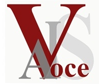

  <div class="header">
  <table cellpadding="0" cellspacing="0" width="100%">
  <tr>
  <td width="222" valign="top" rowspan="2">
      
  </td>
  <td width="495" >
          <t1><b>AISV 2014 - </t1>&nbsp;&nbsp;&nbsp;<t2>Aspetti prosodici e testuali del raccontare: dalla letteratura orale al parlato dei media</b></t2>

</td>
  <td width="222" valign="top">
        </td>
  </tr>
  <tr>
    <td colspan="2" style="font-style:italic">X Convegno Nazionale dell'Associazione Italiana di Scienze della Voce (AISV), 
    <br />
      <b>Torino, 22-24 gennaio 2014</b> - Universit&agrave; degli Studi di Torino</td>
    </tr>
  </table>

      <!-- end .header --></div>